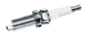

Armada Music
 De: La Frikipedia, la enciclopedia extremadamente seria.
De: La Frikipedia, la enciclopedia extremadamente seria.

|
¡LISTA!
Este artículo o sección no es más que una torpe lista. Si crees que vale la pena, edítalo para que tenga párrafos y esas cosas.
|
| De la serie empresas malignas:
|
| "Armando" Musica
|
|
|
| Perteneciente al grupo:
|
Traficantes de EDM (Exitante Droga para Mongoles)
|
| Se dedica a:
|
Mover millones de dolarucos con su droga
|
| País de origen:
|
 Naranjanianos Naranjanianos
|
| Año de fundación:
|
Do'h mil tré
|
| Super Presidente:
|
Armando von Barro
|
| Nivel de maldad:
|
50% mas que el año anterior
|
| Empresas absorbidas:
|
Ninguna, pero tienen pensado atacar en cualquier momento
|
| Número de empleados:
|
Cualquier pringao que encuentren
|
| Atentados contra la humanidad
|
Muchos por dia
|
| ¿Se aconseja trabajar aquí?
|
Si sabes usar un güiro y eres experto en sobornar...
quizas te aceptan
|
| ¿Se recomienda el boicot?
|
Güat?
|
| Cantidad de denuncias:
|
Muchas pero no quieren que nos demos cuenta Pocas
|
| Sitio web:
|
Página oficial de "Armando" Musica
|
Instrumento indispensable para todas las canciones que hagas en
Armando Armada Music es una mafia que mata a cualquier persona a escobazos discográfica de Armind que en realidad es una empresa traficante de drogas, autos viejunos, multiprocesadoras y cafeterías supuestamente de ABBA y BABA Azul trafican sirenas de de ambulancia M a secuestrar Fosa de las Marianas.
El nombre de la discográfica es por que tienen una armada militar que puede hacerte mierda esta formado por las primeras dos letras de los nombres de sus homosexuales fundadores, Ar mando von Barro, Ma icol el pirado y el rey Da vid Luisito
Subsellos
Armando tiene muchos subsellos aunque en realidad es una estupidez tener tantos.
- Seis mil (6K)
- Un Condado de Trance (A State of Trance)
- Arm
a indo (Armind)
- UnA Ropa (Aropa)
- ABBA Azul
como el mar (AVA Blue)
- ABBA Rrekordinjz (AVA Recordings)
- Mordidas y pitos (Bits & Pieces)
- Sordos Cautivantes (Captivating Sounds)
- Crayón
- Elementos de Droga
-
No tienes Fama (Fame)
- Futuro sonido de Egipto (que nombre) (Future Sound of Egypt)
- Hiju (IHU)
- En Mi Opinión
IP anónima es un imbecil (Im My Opinion)
- JEEEEEEEEEEEE... (Jee)
- EME (M)
- Mainsteij (Mainstage)
- Moderno (Modena)
- Naturaleza
inorganizada
- (In)Perfecto (Perfecto)
- (In)Perfecto Fluor (Perfecto Fluor)
- Pi(lo)to 6
9 (Pilot 6)
- Alguna*Idea? (Re*Brand)
- EseCientoDiecisiete (S117)
- Piercing Auditivo (Soundpiercing)
- Vandido (Vandit)
- Jugo Zuko (Zouk)
- Triangulito Raro (Trice)
- Güeick Yur Maind (Wake Your Mind)
- ¡¿Quien le teme a 138?! (Se lo curraron con el nombre) (Who Afraid of 138?!)
Artistas
- Lolis de 16 bits (16 Bit Lolitas)
- Chu Feises Fuks (2 Faced Funks)
- Alejandro aM.O.R.P.H.o (Alex M.O.R.P.H.)
- Alexander Caca (Alexander Popov)
-
Jean Alessi (Alesso)
- Ala y Falo (Aly & Fila)
- Andrés Rayuela (Andrew Rayel)
- Andy Luna (Andy Moor)
- A.R.D.E. (A.R.D.I.)
- Eriso Flama (Arisen Flame)
- Antillas Hollandesas (Antillas)
- Armando von Barro (Armin van Buuren)
- Audion (Audion)
- Bjolor Aquesso (Bjorn Akesson)
- Piedra azul (Bluestone)
- Bobina del encendido  (Bobina)
- Vodka Shake (Booka Shade)
- Brutalmente Tonto (BT)
- Cristian Cerveza (Chris Schweizer)
- SeEleEmeDe (CLMD)
- Rainbow Dash de Berlin (Dash Berlin)
- David Gravilla (David Gravell)
- Jargüel (Hardwell)
- Duo Argentino Drogado (Heatbeat)
- Sherom Ismae (Jerome Isma-ae)
- Marcquitos Sexto (Mark Sixma)
- Marco el Schulo (Markus Schulz)
- MaRiSCoN (MaRLo)
- Este grupo legendario (Motorcycle)
- Ørjia Nelson (Ørjan Nilsen)
- Planeta de Sordo (Planet of Sound)
- ProtoCulo (Protoculture)
- Ubedoble-Y-Ubedoble (W&W)
y un Laaaaaaaaaaaaaaaaaaaaaaaaaaaaaaaaaaaaaaaaaaaaaaaaaaaaaaaaaaaaaaaaaaaaaaaaaaaaaaaaaaaaaaaaargo etcétera.
(acerca el cursor a La)
Enlaces externos
Frikipedia 2005-2016, Licencia
GFDL 1.2 - Extraído por FrikiLeaks